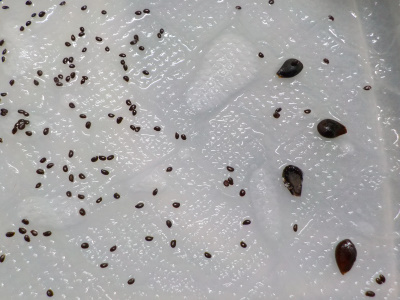
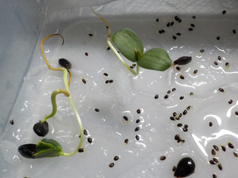
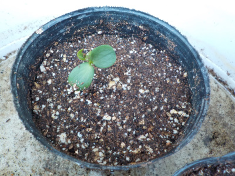
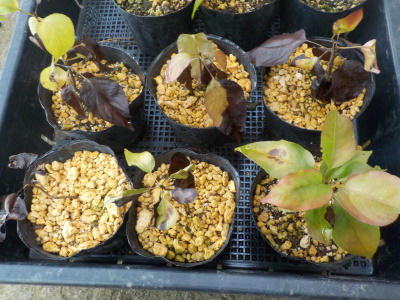
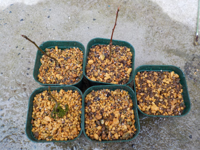
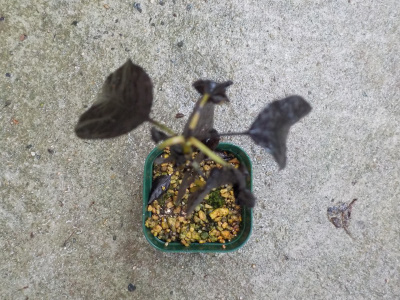
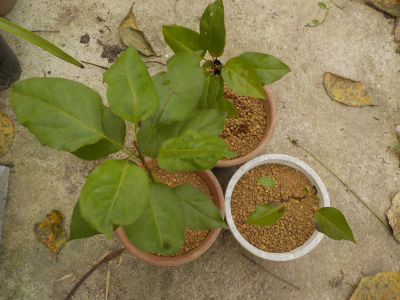
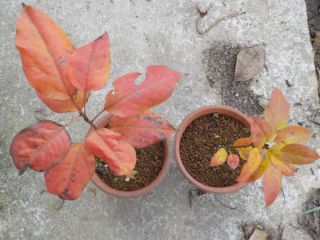
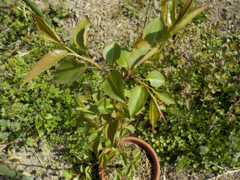
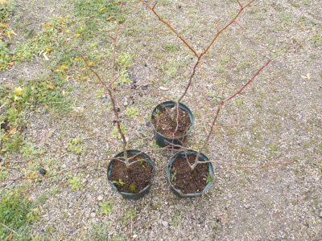

梨の種を蒔きました。
更新日 : 2019/03/10

キウイの種を蒔いたタッパーに梨の種も入れました。
他にも種があったらここにドンドン入れちゃおうかと思うんですが、今のところ入れる種はないです。
更新日 : 2019/03/10

キウイの種を蒔いたタッパーに梨の種も入れました。
他にも種があったらここにドンドン入れちゃおうかと思うんですが、今のところ入れる種はないです。
更新日 : 2019/04/03

芽も根も大きくなっています。
そろそろ土に植えた方がよさそうですね（周りの小さいのはキウイの種です。）
更新日 : 2019/04/07

タッパーよりポットのほうが園芸してるって感じがします。
これから水の管理に注意です。
更新日 : 2019/08/04

夏の日射しに耐えれなかったようで、葉っぱがだいぶ枯れました。あーあ。
１本だけは何故か元気です。これ以上駄目にならないように日陰に移動しました。
更新日 : 2020/03/08

小さいポットから取り出したら、根っこがぐるぐるに張っていました。
もっと早く植え替えした方が良かったです。
実生は始めから根っこがあるので、小さいポットは長く使わない方がいいですね。
更新日 : 2020/06/14

水不足で葉っぱを枯らしてしまいました。
多分すぐに復活すると思いますが、成長が少し遅くなりますね。
またならないよう、水やりに気をつけたいです。
更新日 : 2020/10/04

大きく育つように鉢を大きくしました。
同じような環境で育てていますが、大きさがまちまちです。同じ梨から採ってもDNAが違うんだなーと思ってみています。
こうゆうのが普通でナチュラルなんですよね。
更新日 : 2020/12/06

大きく育つように鉢を大きくしました。
同じような環境で育てていますが、大きさがまちまちです。同じ梨から採ってもDNAが違うんだなーと思ってみています。
こうゆうのが普通でナチュラルなんですよね。
更新日 : 2022/04/09

ちょっと成長したので鉢のサイズを少し大きくしました。
今までの鉢は苔が沢山生えていたので、通気性のいいスリット鉢にしました。水切れしないように注意したいと思います。
更新日 : 2022/12/25

ちょっと成長したので鉢のサイズを少し大きくしました。
今までの鉢は苔が沢山生えていたので、通気性のいいスリット鉢にしました。水切れしないように注意したいと思います。
いったい何年で花が咲いて実ができるんでしょうね。